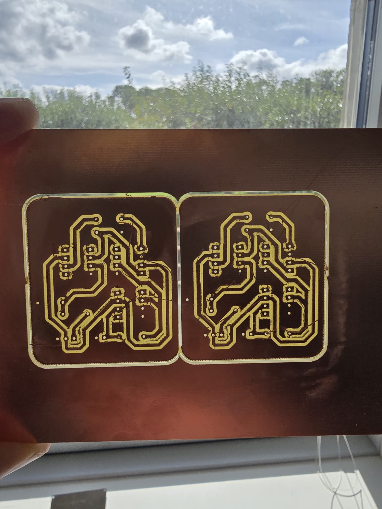
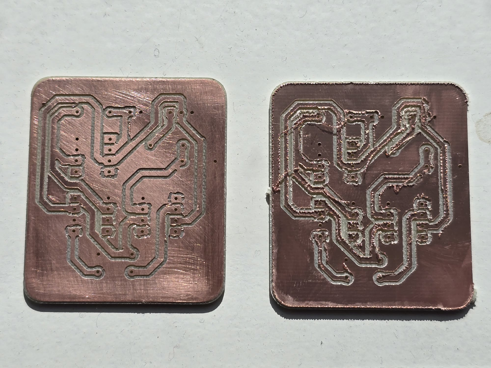

SRM-CAM
Mill a PCB from KiCad on the Roland SRM-20. Load the Gerbers, push the copper into the corner, press Start.
Windows installer
Linux AppImage
Open source

How it works
- Load your boardOpen the Gerber folder from KiCad.
- Copper in the cornerSlide the sheet into the bracket and hold it down.
- Press StartIt finds the copper, levels, drills and cuts the traces by itself.
- Check itThe board comes forward so you can look, and recut anything shallow.
- Cut it outPress one button. Double-sided adds one flip in the middle.
Mill a board is the only page you need at the machine. New to the mill, or stuck? Ask Mads Rudolph or the course TAs.
Where to go
| You want to | Go to |
|---|---|
| Mill a board, one side or two | Mill a board |
| Install it, or export from KiCad | Install & KiCad |
| Fix something that went wrong | Troubleshooting |
| Set up a mill: Arduino, bracket, clamps | Hardware & firmware |
| Do it all by hand, or use several boards on a sheet | Pro pages, in the menu |
| Put solder mask on a milled board | Solder mask |
In a video
The 13-minute video shows the by-hand way in Pro.
Finished boards

